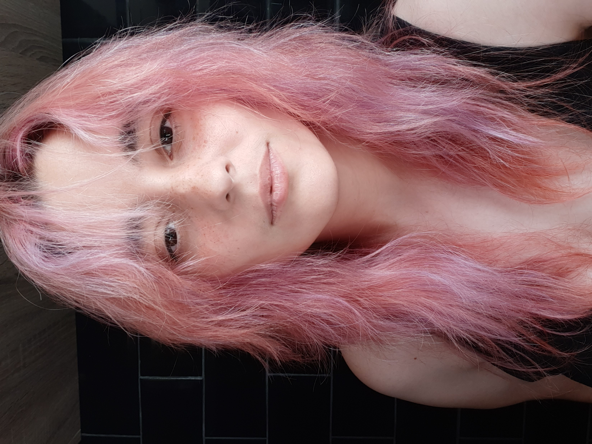

Sobre mi
Soy una persona proactiva que disfruta de la tecnología y
plataformas digitales y el trabajo en equipo. Me apasionan
los videojuegos, la generación y edición de contenido digital.
Siempre estoy buscando una oportunidad para poner mis aptitudes
a prueba.
Mis habilidades incluyen el diseño gráfico y edición de video,
project management, comunicación y alto nivel de inglés.